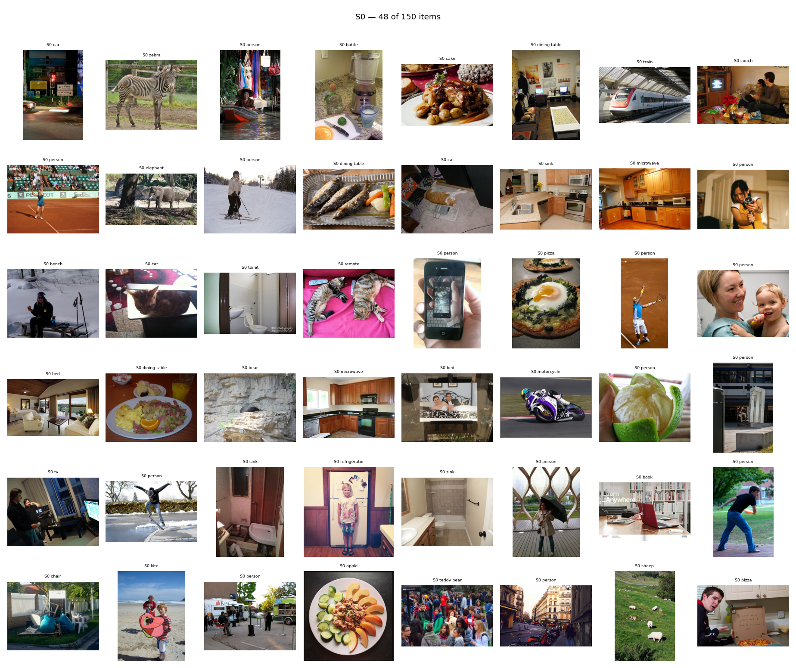
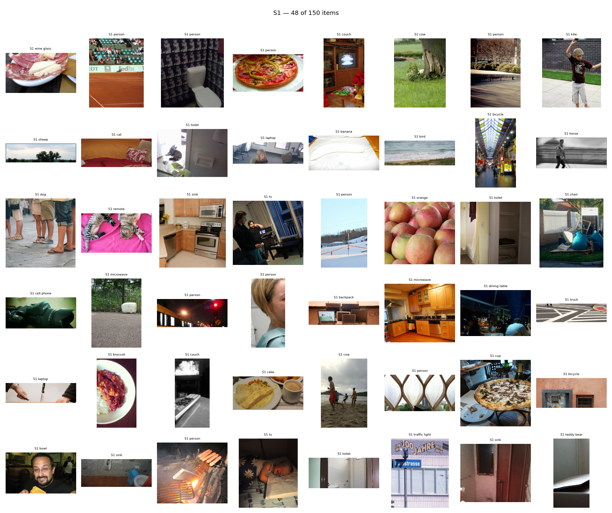
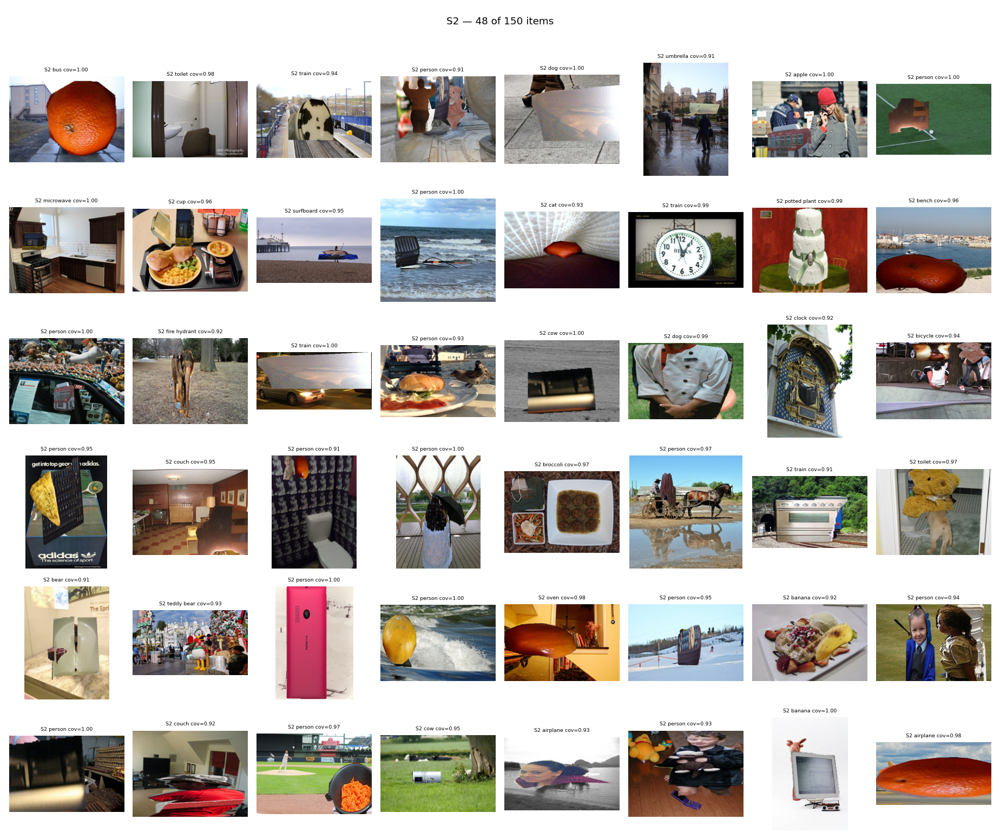
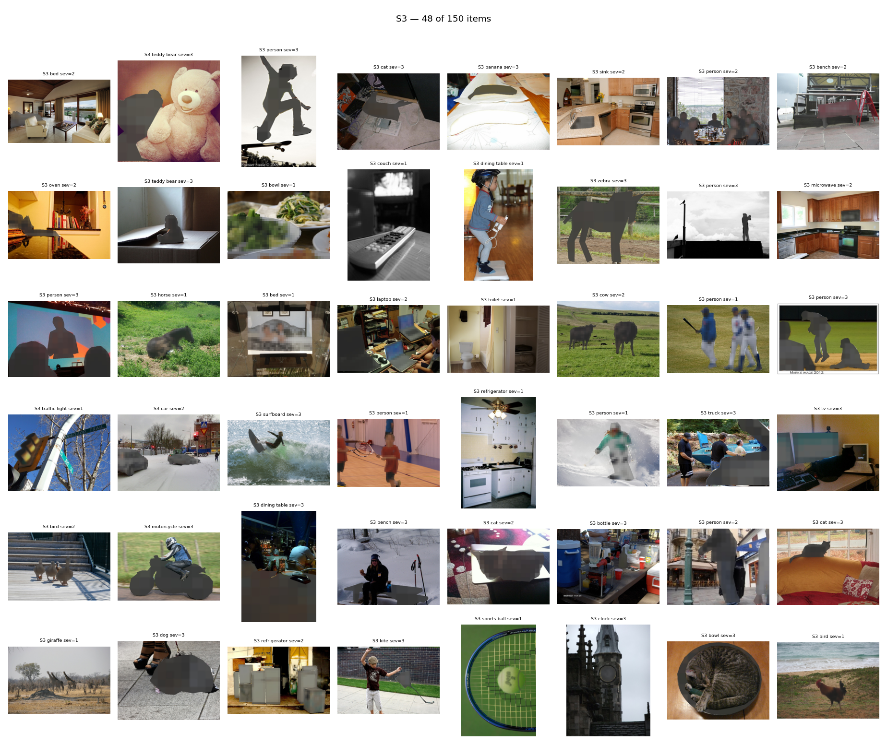
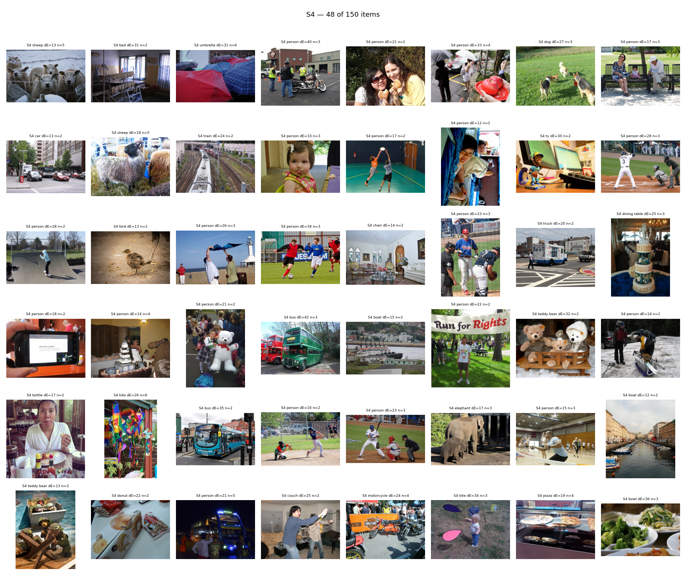
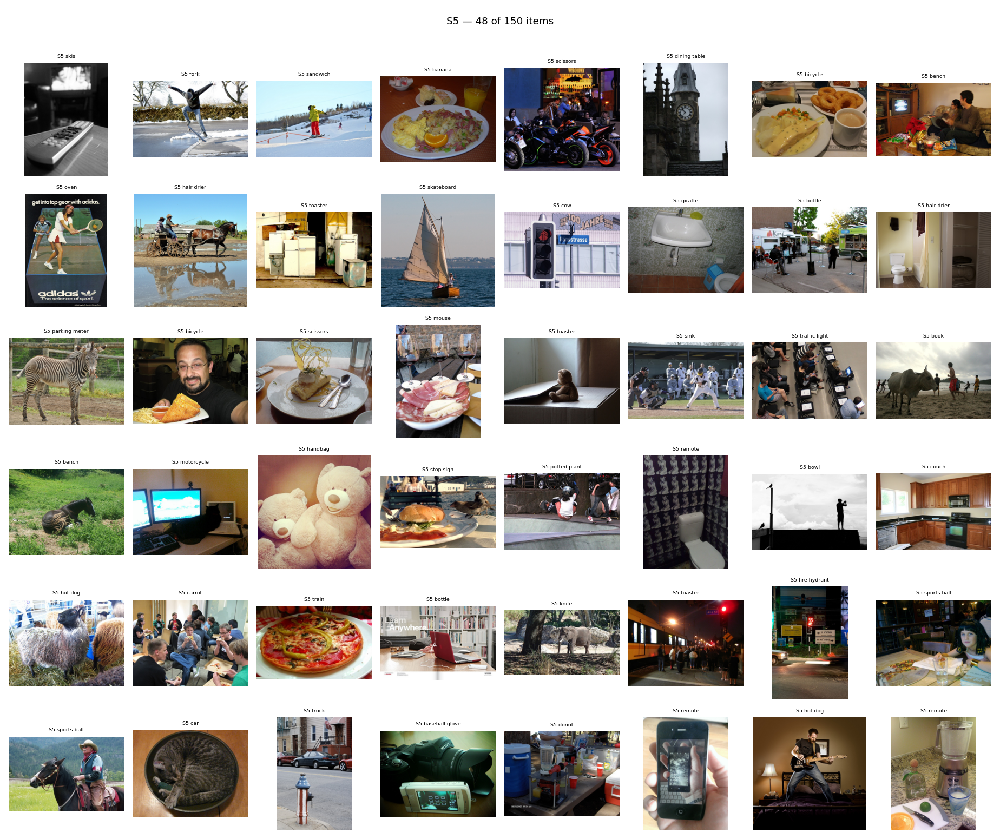

EVID-6 visual QA - 288 images
Captions carry the numbers the generator used to accept each
item. Scan for anything the geometry could not catch.
- S1 - is every instance really outside the crop?
- S2 - does the occluder sit on the referent, and does it look like
an object rather than a pasted rectangle?
cov should be ≥ 0.90.
- S3 - is the referent degraded but still clearly there?
If severity 3 looks like deletion, S3 has collapsed into S2.
- S4 - would a person actually be unsure which one is meant?
A high
dE with obviously different objects is not ambiguity.
- S5 - is the named category genuinely absent?
- S0 - was it answerable in the first place?
S0 48 of 150 shown

S1 48 of 150 shown

S2 48 of 150 shown

S3 48 of 150 shown

S4 48 of 150 shown

S5 48 of 150 shown
